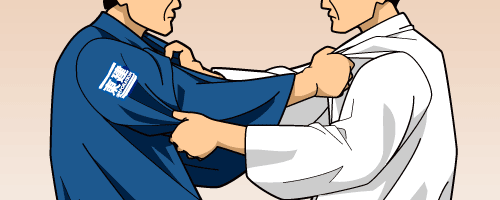

Kumi kata

A importancia do kumi kata para fazer o sseguintes golpes:
golpes
- Osoto Gari
- Ouchi Gari
- Harai Goshi
- Uchi Mata
- Morote Seoi Nage
- Ippon Seoi Nage
- Tai Otoshi
- Sode tsurikomi Goshi
- Tani Otoshi
- Yoko tomoe Nagi
- Sumi Gaeshi
- Ushiro Goshi
- Sankaku Jime
- Koshi Guruma
- Osoto guruma
- Ko Ouchi Gari
- De Ashi Barai